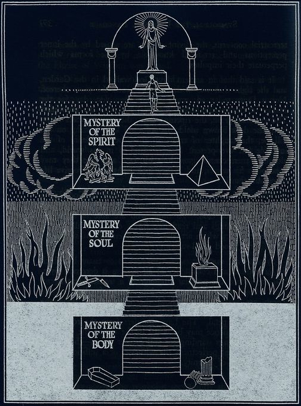

A Câmara dos Mistérios
O Mistério do Corpo
O corpo é o templo da existência física, a estrutura material que nos conecta ao mundo sensorial. É o veículo através do qual experimentamos a vida e interagimos com o ambiente. O mistério do corpo reside na complexidade e na perfeição de suas funções biológicas, na capacidade de regeneração e na interdependência dos sistemas que sustentam a vida. Ele é uma constante lembrança da fragilidade e da finitude da nossa presença física.
O Mistério da Alma
A alma é o centro da experiência emocional e da identidade pessoal. É a sede dos sentimentos, pensamentos e desejos que moldam nossa percepção do mundo. O mistério da alma está na profundidade das nossas emoções e na singularidade de cada indivíduo. Ela é o que nos torna únicos e nos dá um senso de continuidade e significado, apesar das mudanças e desafios da vida.
O Mistério do Espírito
O espírito representa a dimensão transcendente da existência, a conexão com algo maior do que nós mesmos. É a essência que busca propósito e compreensão além do plano material. O mistério do espírito reside na sua capacidade de aspirar a ideais, a sua busca por transcendência e a sua busca por respostas às perguntas fundamentais da vida. Ele é o que nos liga ao divino, ao eterno e ao infinito.